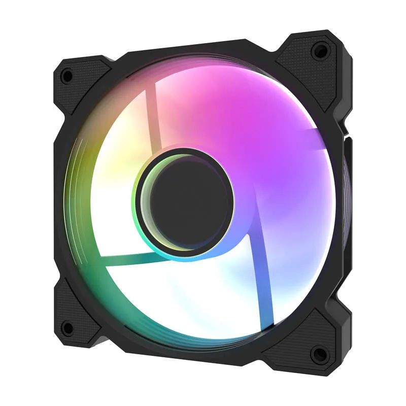

Ventilaator
Ventilaator on arvutikorpuse jahutuskomponent, mis tagab pideva õhuringluse seadme sees. Selle ülesandeks on puhuda jahe õhk korpusesse sisse ja juhtida kuum õhk sealt välja, hoides ära kuumuse kogunemise. Korralik ventilaatorite süsteem parandab märgatavalt kogu arvuti jõudlust ja pikendab selle osade eluiga.
